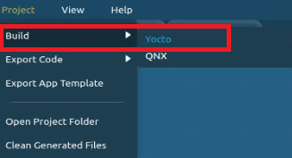
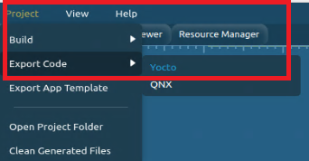
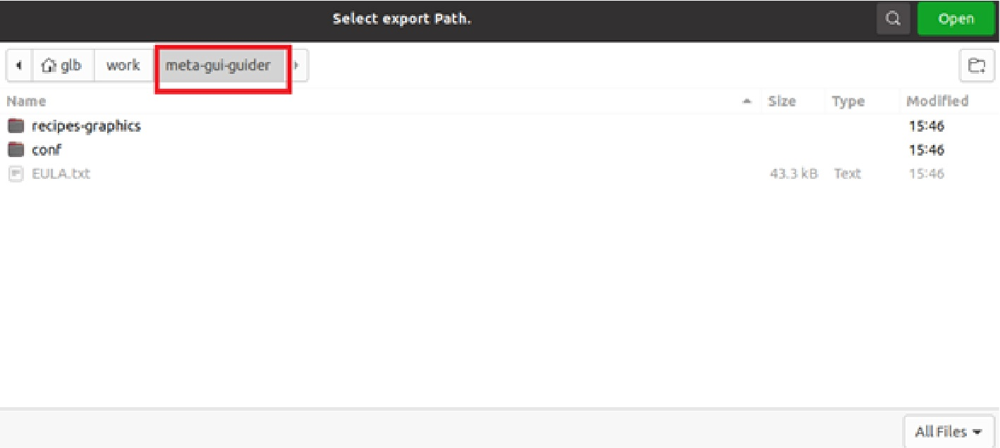

GUI Guider provides two options to build the GUI application binary (gui_guider):
Standalone build
In this way, GUI Guider IDE launches the Yocto toolchain to cross-compile the GUI application. When the application binary is built, user must copy it to pre-installed Yocto rootfs and execute it on the board.
$ mkdir ~/bin
$ curl http://commondatastorage.googleapis.com/git-repo-downloads/repo > ~/bin/repo
$ chmod a+x ~/bin/repo
$: PATH=${PATH}:~/bin
$ mkdir imx-bsp
$ cd imx-bsp
$ repo init -u https://github.com/nxp-imx/imx-manifest -b <branch name> [ -m <release manifest>]
$: repo sync
$ MACHINE=imx93evk DISTRO=fsl-imx-xwayland source ./imx-setup-release.sh -b bld-imx93evk$ bitbake -c populate_sdk imx-image-multimediaFor v6.1.55-2.2.0 release:
$ sudo sh ./fsl-imx-xwayland-glibc-x86_64-imx-image-multimedia-armv8aimx93evk-toolchain-6.1-mickledore.sh -y
For v6.1.1-1.0.0 release:
$ sudo sh ./fsl-imx-xwayland-glibc-x86_64-imx-image-multimedia-armv8aimx93evk-toolchain-6.1-langdale.sh -y
$ sudo apt install ninja-build
Export Yocto layer and build GUI application by Yocto
GUI Guider IDE exports a Yocto layer, which includes GUI application codes and related Yocto recipes. User must plug in the exported Yocto layer into an existing Yocto build environment, and use bitbake to build the gui_guider binary.


<path>/imx-bsp/sources/ folder.$ MACHINE=imx93evk DISTRO=fsl-imx-xwayland source ./imx-setup-release.sh -b bld-imx93evk
$ bitbake-layers add-layer ../sources/meta-gui-guider
$ echo "INHERIT += \"rm_work\"" >> conf/local.conf
$ echo "RM_WORK_EXCLUDE += \"gui-guider\"" >> conf/local.conf
$ bitbake gui-guider
$ source sources/poky/oe-init-build-env bld-imx93evk/
$ bitbake gui-guider
<path>/imx-bsp/bld-imx93evk/tmp/work/armv8a-poky-linux/gui-guider/1.7.0-r0/images/ folder.